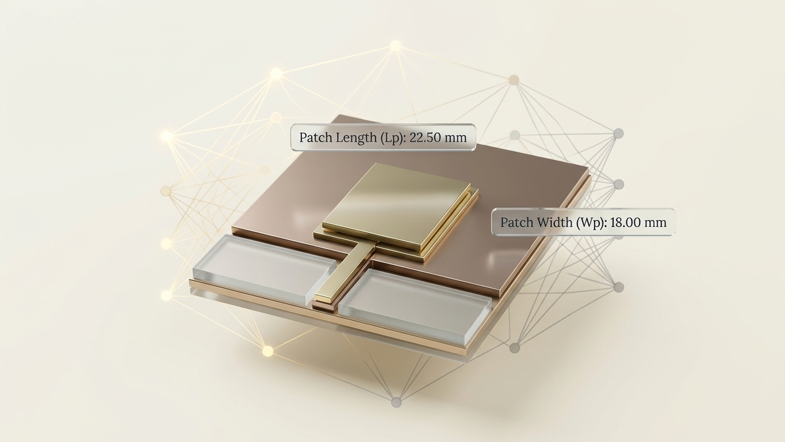

Graduation project · AI / RF01
AntDesigner
An AI microstrip patch antenna design platform trained on 6,048 CST simulations. It designs an antenna in about 3 seconds with 94.76% accuracy — instead of hours of manual simulation work — and predicts its performance.